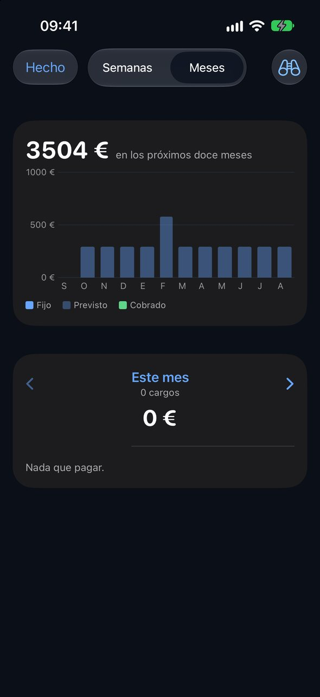
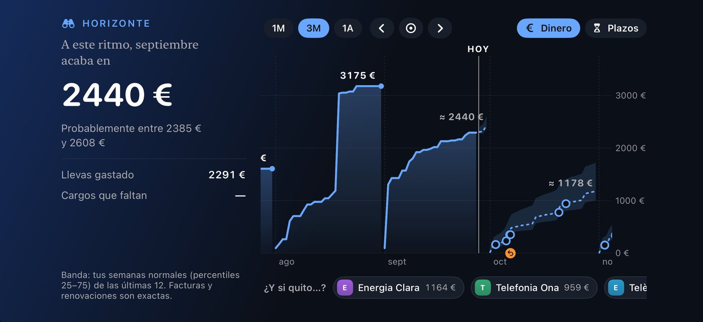

Tiquet Gratis
0 €
Sin límite de tiempo
- Tiques, garantías, contratos y sus recordatorios
- Hoja de la casa y detección de cargos inusuales
- Copias de seguridad e iCloud opcional
- 5 preguntas al día por dispositivo sobre funciones gratuitas
Reúne contratos, seguros y tiques. Encuentra el próximo pago, ten a mano una garantía y recibe avisos antes de que termine un plazo. En tu iPhone y tu iPad, sin conectar tu banco.
iOS y iPadOS 27 o posterior · app en español e inglés; catalán próximamente

La póliza, el precio y el último día para darlo de baja, en una ficha. Un aviso te da tiempo para revisar el contrato.

Consulta qué se espera cobrar y cuándo, según tus contratos y pagos anteriores. Las previsiones indican en qué se apoyan. Incluido en Plus.

Guarda el tique y consulta el plazo de devolución o la garantía. Conserva el documento original y revisa la fecha leída.
0 €
Sin límite de tiempo
9,99 €
Precio de lanzamiento en España · pago único
Sin renovación automática ni cargos al terminar. Después sigues con Gratis y conservas lo que hayas guardado. La prueba es individual; comprar Plus es opcional.
En Familia comparte la compra de Plus con hasta cinco familiares, según los ajustes de compras compartidas de Apple. Cada persona conserva sus propios datos: no se comparten automáticamente extractos, gastos ni documentos.
Requiere iOS o iPadOS 27 o posterior. Las funciones del modelo local necesitan un dispositivo compatible con Apple Intelligence, con el servicio activado y el modelo disponible en el idioma elegido. Sin él, puedes guardar y consultar documentos y usar la lectura de texto y las reglas; algunas preguntas y funciones de IA no estarán disponibles.
La app calcula las cifras a partir de tus registros; el modelo de Apple las explica en el dispositivo. Comprueba los documentos leídos: pueden contener errores, y los cargos futuros son previsiones. Una pregunta sobre sitios puede consultar Apple Maps para localizar un lugar, sin enviar tus importes ni tus extractos.
Conversación y pantallas con datos ficticios. Las respuestas dependen de los datos guardados y de la disponibilidad de Apple Intelligence.
La póliza que te mandaron por correo, la factura en PDF, la foto de un tique, los extractos que bajas de tu banco: mantenlos pulsados, toca Compartir y elige Tiquet. Hasta 20 a la vez: los lee uno tras otro, en el orden en que los mandas. Todo se lee en el dispositivo.
Cada tique del súper guarda sus artículos con su precio. Tiquet compara lo mismo en la misma tienda y te dice cuánto ha subido tu cesta habitual, qué producto sube más y dónde lo tienes más barato.


Cinco widgets: el mes, el próximo cargo, tus seguros a mano el día que pasa algo, tus buenos sitios cerca y la lista de la compra, que tachas sin abrir la app. Un botón en el Centro de control para escanear un tique. Y Siri, que sabe cuándo se renueva cada contrato.
Un solo eje de tiempo. Lo que gastaste, hacia dónde va el mes con una banda honesta, y cada cargo que viene. Apaga un contrato para ver el año sin él.

Tu IA financiera funciona en tu dispositivo. No recibimos ni tus extractos ni tus importes: no hay ningún servidor nuestro. Sincroniza con tu propio iCloud solo si quieres; Apple Maps recibe una dirección o el nombre de un sitio cuando lo buscas.
Los papeles que una casa necesita cuando uno de sus adultos no está para explicarlos. Hechos en el dispositivo, compartidos solo por ti.
Un PDF con todo lo que la casa tiene contratado: seguros primero, luego suscripciones y recibos. Compañía, número de póliza, quién está asegurado, qué cubre, el teléfono para dar un parte, dónde se guarda el acceso, cuándo renueva. Sin precios salvo que los pidas; nunca una contraseña.
DNI, pasaporte, carné de conducir, la ITV, tarjetas sanitarias. Cuál, de quién, hasta cuándo; el número oculto en modo discreto y nunca en la hoja. Aviso 60 y 15 días antes, en el widget y en El Mes.
Las personas de la casa son etiquetas: un toque en un contrato dice de quién es, y «todo lo de Marta» es una pantalla.
Hazle una foto o compártelo desde Mail. El modelo del dispositivo lee tienda, fecha, artículos, política de devolución y garantía. La foto queda como prueba.
Un PDF o una foto de la póliza: número, prima, qué cubre, quién está asegurado y el teléfono de siniestros se leen y se comprueban contra el papel.
Los descargas de tu banco y los abres con Tiquet: BBVA, Sabadell y más. Sin contraseña, sin conexión. Los números de tarjeta se recortan a sus cuatro últimas cifras antes de guardar nada. Busca cualquier tienda o palabra en todos ellos.
Un tique, su línea del banco y la cuota del contrato son un solo pago. Donde hay extracto, manda el extracto. Dos pólizas de una misma aseguradora, la tuya y la de tu pareja, son dos fichas con dos precios.
Si el banco deja de mostrar un cargo, Tiquet cierra el contrato en el último mes en que se vio, y lo dice.
Subidas silenciosas, protecciones que ya han costado más que la cosa, una garantía de pago que la ley ya te da, comisiones. Tus números y la pregunta que hacer, con cada cargo detrás de cada una; nunca una compañía, una cobertura ni una baja.
Cada pago del banco recibe su etiqueta solo; un toque clasifica el resto, pasado y futuro, de un comercio o de muchos a la vez. Una etiqueta suma sus tiques, sus contratos, sus cosas y sus pagos del banco, cada uno contado una vez. Sigue cualquier etiqueta mes a mes.
Vuestros habituales en una estantería, los viajes detectados solos, las localidades de casa de un vistazo; y luego cada sitio con sus estrellas y notas, todas sus visitas, lo que ha costado y los platos para volver a pedir. Busca un nombre que tu banco conoce y pasa a ser un sitio.
Tu propio iCloud mantiene tus dispositivos iguales, si lo activas. Para la familia, un archivo por AirDrop con contratos y garantías: sin tiques, sin banco.
Un toque convierte cada importe en •••, para el tren o el sofá. El selector de apps muestra una tapa, no tus cifras.
Un Bizum a alguien nuevo y muy por encima de lo habitual, una transferencia a una cuenta nunca vista, un cargo en el extranjero sin viaje, una tarjeta que están probando, un cobro doble. Tiquet te pregunta si lo reconoces y, si no, te dice qué hacer ya. Se calcula en tu iPhone y no contacta con nadie.
Lo que entró frente a lo que salió y lo que quedó, cada mes. El dinero que mueves entre tus propias cuentas se reconoce y no cuenta; las devoluciones y el Bizum de un amigo son dinero que vuelve, no ganancias. Cada cuenta dice hasta dónde llegan sus extractos; solo se guardan el banco y las cuatro últimas cifras.
Un viaje, un coche, un colchón: cuánto y para cuándo. Lo que apartas y las transferencias que muestra tu banco llenan el anillo, con lo que hace falta cada mes para llegar a tiempo.
«Cena Can Pere 42 ayer» en la barra de preguntas se convierte en un tique tal como se guardará: lo revisas y tocas Guardar. Nada existe hasta que lo haces.
Luz, agua, gas: el cargo previsto es el mismo mes del año pasado movido por la deriva de este año, nunca solo el último recibo. La ficha dice qué se espera y por qué.
Un móvil a 24 plazos dice «pago 7 de 24, hasta marzo de 2027» y se retira solo tras el último. Una prueba gratis cuenta los días hasta que empieza a cobrar, con un aviso mientras decir que no sigue siendo gratis.
Por comercio, por grupo, o deja que el modelo del dispositivo señale lo que parece mal archivado. Un toque corrige cada pago de ese comercio, pasado y futuro, en todos tus dispositivos. Deshacer también es un toque.
Selecciona contratos, cosas, pagos del banco, etiquetas o sitios y actúa sobre todos: etiquetar, mover, fusionar, dar de baja, borrar. Todo borrado pregunta antes y dice qué se queda.
Dónde está, su teléfono, sus estrellas y tus notas viven en el sitio; cada visita, escaneada o del banco, se engancha a él. El siguiente extracto va directo al sitio correcto.
Devoluciones, renovaciones y garantías en una pila que se lee de un vistazo; márcalas como hechas o que te lo recuerde mañana o el lunes, de una en una o muchas a la vez.
Tus documentos guardados y los cálculos locales siguen disponibles sin conexión. La sincronización, las búsquedas de mapas, los logos y las operaciones del App Store necesitan conexión.
Cuatro semanas atrás y doce adelante. Lo gastado, y luego lo que viene: tu ritmo del día a día, los cargos fijos y los recibos que van por consumo. La semana más cargada se nombra arriba, porque es la que duele.
El día 3 sale el número del mes pasado: una portada, el dinero dibujado día a día, un diario de lo que pasó, dónde comisteis y qué os encantó, el mapa, y el horóscopo de la casa: lo que trae el mes que viene, leído en tus contratos y no en las estrellas.
Escribe un contrato, o adjunta su PDF y deja que la ficha se rellene sola.
Descárgalos de tu banco como archivos. Tiquet encuentra lo que se repite y te lo ofrece como contratos.
El tique de cualquier cosa con garantía o plazo de devolución. El resto es opcional.
Un mes antes de que renueve una póliza anual: momento de comparar. Después, los últimos días para decir que no.
Gratis incluye tiques, garantías, contratos, recordatorios y 5 preguntas al día por dispositivo sobre funciones gratuitas. Plus tiene un precio de lanzamiento de 9,99 € en España, en un solo pago, sin suscripción, y permite compartir la compra con En Familia. Puedes probar Plus 14 días gratis, sin renovación automática.
No, y no lo hará nunca. Descargas los extractos como archivos y los abres con Tiquet. No guarda ningún acceso al banco.
En tu dispositivo. Si activas la sincronización con iCloud, también en la base de datos privada de tu cuenta de Apple, que el desarrollador no puede leer.
Puedes guardar y consultar documentos y usar la lectura de texto y las reglas. El modelo local exige un dispositivo compatible, Apple Intelligence activado y el modelo descargado y disponible en tu idioma. Algunas preguntas y funciones de IA no estarán disponibles.
No. Comparte la compra de Plus, sujeto a los ajustes de Apple, con hasta cinco familiares. Los datos de cada cuenta de Apple siguen separados. Para compartir documentos con otra persona, elige expresamente la exportación del archivo de casa.
Sí. Un .zip con cada tique, foto, póliza y movimiento, más hojas de cálculo que abre cualquiera.
No. Te da tus propios números y la pregunta que vale la pena hacer. Nunca recomienda una compañía, una cobertura ni una baja.
Vuelves a las funciones gratuitas sin ningún cobro automático. Lo que hayas guardado se conserva. Las funciones de Plus requieren comprarlo; la prueba no se comparte por En Familia.
Sí, hasta 20 en cada envío: fotos, PDF y extractos del banco en CSV o Excel. Al abrir Tiquet los lee en el orden en que los mandaste; los extractos, uno detrás de otro, y lo que ya estaba no se duplica. Si tu banco solo exporta un año cada vez, manda un archivo por año.